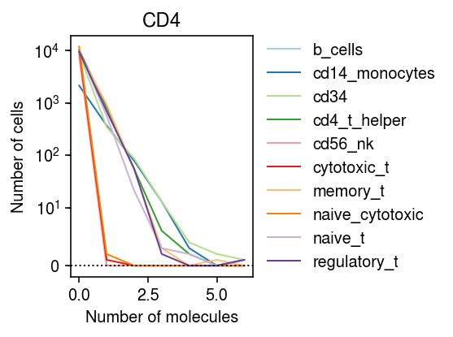
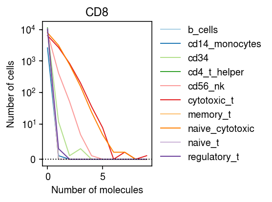

Marker genes in in silico mixtures
Table of Contents
Introduction
We previously found that almost no genes depart from a unimodal assumption on expression variation, even for heterogeneous tissues. Here, we investigate this question on in silico mixtures of sorted immune cells.
Setup
import anndata import numpy as np import pandas as pd import scanpy import scipy.io import scipy.sparse as ss import scmodes import sqlite3
%matplotlib inline %config InlineBackend.figure_formats = set(['retina'])
import matplotlib.pyplot as plt plt.rcParams['figure.facecolor'] = 'w' plt.rcParams['font.family'] = 'Nimbus Sans'
Methods
Data
Load the sorted cells.
def _read_10x(prefix): counts = scipy.io.mmread(f'{prefix}/matrix.mtx.gz').tocsr() samples = pd.read_csv(f'{prefix}/barcodes.tsv.gz', sep='\t', header=None) genes = pd.read_csv(f'{prefix}/genes.tsv.gz', sep='\t', header=None) return anndata.AnnData(counts.T, obs=samples, var=genes, filemode='memory') cell_types = ['b_cells', 'cd14_monocytes', 'cd34', 'cd4_t_helper', 'cd56_nk', 'cytotoxic_t', 'memory_t', 'naive_cytotoxic', 'naive_t', 'regulatory_t'] data = {k: _read_10x(f'/project2/mstephens/aksarkar/projects/singlecell-ideas/data/10xgenomics/{k}/filtered_matrices_mex/hg19/') for k in cell_types}
# TODO: anndata.concatenate is broken? mix_obs = (pd.concat([data[k].obs for k in data], keys=data.keys()) .reset_index(level=0) .rename({'level_0': 'cell_type', 0: 'barcode'}, axis=1)) mix_var = data['b_cells'].var.rename({0: 'gene', 1: 'name'}, axis=1)
# Important: we need CSR for vstack, but CSC to subset by gene downstream mix = anndata.AnnData(ss.vstack([data[k].X for k in data]).tocsc(), var=mix_var, obs=mix_obs)
Marker genes
Get marker genes from Thermo Fisher.
markers = [ 'CD11B', # DC pan 'CD127', # CD4 pan 'CD13', # DC pan 'CD134', # CD4 pan 'CD137', # CD4 pan 'CD152', # CD4 pan 'CD154', # CD4 pan 'CD19', # B cell pan 'CD2', # CD4 pan 'CD20', # B cell pan 'CD22', # B cell pan 'CD25', # (HIGH) CD4 pan 'CD27', # CD4 pan 'CD272', # CD4 pan 'CD279', # CD4 pan 'CD28', # CD4 pan 'CD3', # CD4 pan 'CD33', # DC pan 'CD4', # CD4 pan 'CD45RA', # NAIVE 'CD45RO', # MEMORY 'CD5', # CD4 pan 'CD62L', # low: EFFECTOR high: MEMORY/NAIVE 'CD69', # HIGH 'CD7', # CD4 pan 'CD70h', # B cell pan 'CD79A' # B cell pan 'CD79B' # B cell pan 'CD80', # DC pan 'CD83', # DC pan 'CD86', # DC pan ]
Results
Examples
Look at CD4.
idx = mix.var[mix.var['name'] == 'CD4'].index n_bins = mix.X[:,idx].max() cm = plt.get_cmap('Paired') plt.clf() plt.gcf().set_size_inches(4, 3) plt.yscale('symlog', linthreshy=10) for i, k in enumerate(data): bins, edges = np.histogram(data[k].X[:,idx].A.ravel(), bins=np.arange(n_bins + 1)) plt.plot(edges[:-1], bins, color=cm(i), lw=1, c=cm(i), label=k) plt.axhline(y=0, lw=1, ls=':', c='k') plt.title('CD4') plt.legend(frameon=False, loc='center left', bbox_to_anchor=(1, .5)) plt.xlabel('Number of molecules') plt.ylabel('Number of cells') plt.tight_layout()

Look at CD8A.
idx = mix.var[mix.var['name'] == 'CD8A'].index n_bins = mix.X[:,idx].max() cm = plt.get_cmap('Paired') plt.clf() plt.gcf().set_size_inches(4, 3) plt.yscale('symlog', linthreshy=10) for i, k in enumerate(data): bins, edges = np.histogram(data[k].X[:,idx].A.ravel(), bins=np.arange(n_bins + 1)) plt.plot(edges[:-1], bins, color=cm(i), lw=1, c=cm(i), label=k) plt.axhline(y=0, lw=1, ls=':', c='k') plt.title('CD8') plt.legend(frameon=False, loc='center left', bbox_to_anchor=(1, .5)) plt.xlabel('Number of molecules') plt.ylabel('Number of cells') plt.tight_layout()

Browser
Pick out an interesting set of genes (superset of markers).
idx = mix.var.loc[mix.var.apply(lambda x: x[1].startswith('CD') or x[1].startswith('HLA'), axis=1)].index
with sqlite3.connect('/project2/mstephens/aksarkar/projects/singlecell-modes/browser/browser.db') as conn: conn.execute('drop table if exists markers;') for j in idx: print(f'Processsing gene {j}') n_bins = mix.X[:,j].A.ravel().max() if n_bins <= 1: continue for k in data: bins, edges = np.histogram(data[k].X[:,j].A.ravel(), bins=np.arange(n_bins + 1)) t = pd.DataFrame({'n_mols': edges[:-1], 'n_cells': bins}) t['cell_type'] = k t['name'] = mix.var.loc[j, 'name'] t.to_sql(name='markers', con=conn, if_exists='append', index=False)
with sqlite3.connect('/project2/mstephens/aksarkar/projects/singlecell-modes/browser/browser.db') as conn: conn.execute('create index idx_markers on markers(name, cell_type);')